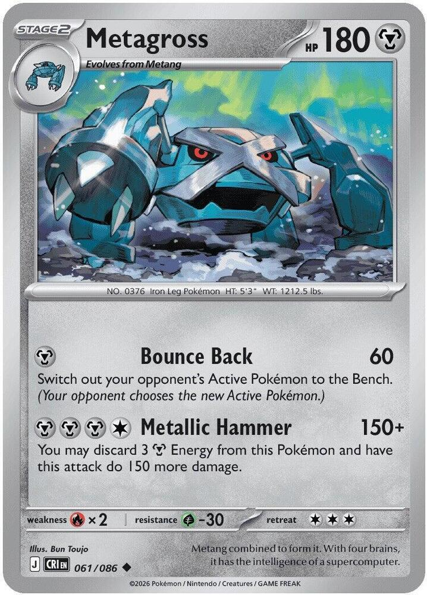
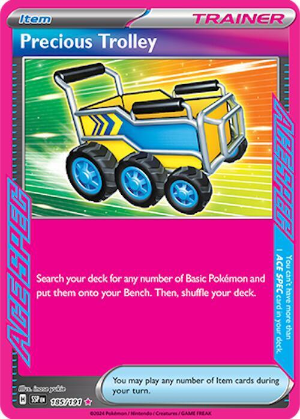
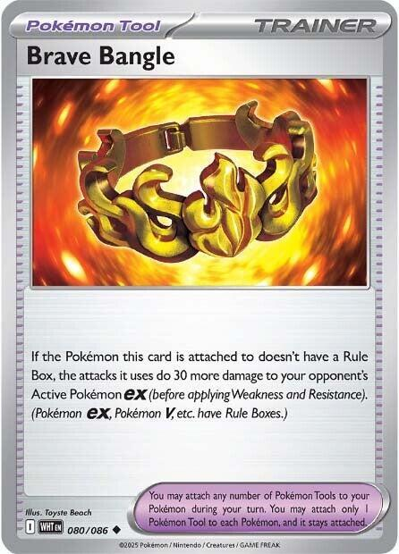

x3
x3 x4
x4 x4
x4 x4
x4
x2 x3
x3 x4
x4![Boss's Orders [Ghetsis]](./assets/654453_bosss-orders-ghetsis.jpg) x3
x3 x2
x2 x2
x2 x4
x4 x4
x4 x2
x2



x2 x2
x2 x12
x12 Iron Excavation
Iron Excavation 

Tournament · one evolution line, two attackers, and only one of them costs three Prizes
← back to all decks
Beldum evolves into Metang. Metang evolves into Metagross. That is one line, three cards deep, and it does two completely different jobs at the same time.
The Metang you leave on the Bench is the Energy engine. Metal Maker looks at the top four cards of your deck and attaches every basic Metal it finds, anywhere you like, once per copy per turn. Three Metang standing is three looks at four cards, every turn, and it never touches your hand.
The Metang you evolve is a 300-damage attacker that gives up one Prize. Metallic Hammer is 150, and 300 if you discard three Metal from it. Put a Brave Bangle on it — legal because Metagross has no Rule Box — and it does 330 to an Active Pokémon ex.
That 330 is the number the whole format is built around. It one-shots Dragapult ex at 320 and every two-Prize ex beneath it. The stock Mega Excadrill list gets to 330 too, off a 340 HP Mega that hands back three Prizes when it dies. This deck gets there off a 180 HP Stage 2 that hands back one.
| Attacker | Energy | Damage | Prizes it gives up |
|---|---|---|---|
| Metagross + Brave Bangle | 4 | 330 vs ex | 1 |
| Mega Excadrill ex | 5 | 330 | 3 |
Both hit the same number. One of them costs a third of the game.
So the Mega is not the workhorse here. It is the closer — 340 HP of furniture that comes out when there are two Prizes left and a body that survives what the format throws. Metagross does the grinding, and it does it off the same four Beldum the engine already needed. The plan B costs zero extra Basics, which is the entire reason this list fits in 60 cards.
x3x4x4x4
x2x3x4x3x2x2x4x4x2

x2x2x12Pokémon (20)
| Qty | Card | Set | Number | Reg |
|---|---|---|---|---|
| 3 | Mega Excadrill ex | Pitch Black | 065 | J |
| 4 | Drilbur | Pitch Black | 046 | J |
| 4 | Beldum | Chaos Rising | 059 | J |
| 4 | Metang | Temporal Forces | 114 | H |
| 2 | Metagross | Chaos Rising | 061 | J |
| 3 | Genesect ex | Black Bolt | 067 | I |
Trainers (28)
| Qty | Card | Type | Set | Number | Reg |
|---|---|---|---|---|---|
| 4 | Lillie's Determination | Supporter | Mega Evolution | 119 | I |
| 3 | Boss's Orders | Supporter | Mega Evolution | 114 | I |
| 2 | Philippe | Supporter | Chaos Rising | 079 | J |
| 2 | Dawn | Supporter | Phantasmal Flames | 087 | I |
| 4 | Ultra Ball | Item | Mega Evolution | 131 | I |
| 4 | Buddy-Buddy Poffin | Item | Temporal Forces | 144 | H |
| 2 | Switch | Item | Mega Evolution | 130 | I |
| 1 | Night Stretcher | Item | Shrouded Fable | 061 | H |
| 1 | Energy Recycler | Item | Destined Rivals | 164 | I |
| 1 | Precious Trolley | Item | Surging Sparks | 185 | H |
| 2 | Brave Bangle | Tool | White Flare | 080 | I |
| 2 | Full Metal Lab | Stadium | Temporal Forces | 148 | H |
Energy (12)
| Qty | Card | Set | Number | Reg |
|---|---|---|---|---|
| 12 | Basic Metal Energy | Mega Evolution Energies | 008 | - |
20 + 28 + 12 = 60. ✓
Basics: 11 (4 Drilbur, 4 Beldum, 3 Genesect ex), which puts the no-mulligan rate at 77.8%, inside the 75–85% band. Drilbur and Beldum both sit at exactly 70 HP, so every Buddy-Buddy Poffin finds two of the cards you actually want on turn one. That is not luck; it is why those two prints were chosen.


 Metal
Metal Fire ×2
Fire ×2 Grass -30
Grass -30 4
4 legal (Reg J)Undermine (90) - Discard the top 2 cards of your opponent's deck.Maximum Drilling (200+) - If this Pokémon has at least 2 extra Energy attached (in addition to this attack's cost), this attack does 130 more damage.
legal (Reg J)Undermine (90) - Discard the top 2 cards of your opponent's deck.Maximum Drilling (200+) - If this Pokémon has at least 2 extra Energy attached (in addition to this attack's cost), this attack does 130 more damage.Stage 1 from Drilbur. Gives up 3 Prize cards. 340 HP, Retreat 4, Fire Weakness, Grass Resistance.
Maximum Drilling is for 200, plus 130 more when at least two extra Energy are attached. Five Energy, 330 damage, every turn, no cooldown and no self-discard. The fourth Energy buys nothing at all; there is no ramp here, only a cliff.
Undermine is for 90 and discards the top two cards of the opponent's deck. It is the attack while you are still counting, and the mill is a rounding error you get for free.
340 HP is above the format's ceiling. The hardest common single hit in Standard is Maximum Drilling itself at 330, so in the mirror nobody one-shots anybody. Excadrill survives what it dishes out.
Three copies, and it is a Stage 1, so this deck runs no Rare Candy — four slots the other Mega decks in this house never get back. Retreat 4 is the worst number on the card; see game plan 4 before you sleeve it.

 FightingGrass ×22legal (Reg J)Call for Family - Search your deck for up to 2 Basic Pokémon and put them onto your Bench. Then, shuffle your deck.Dig Claws (50)
FightingGrass ×22legal (Reg J)Call for Family - Search your deck for up to 2 Basic Pokémon and put them onto your Bench. Then, shuffle your deck.Dig Claws (50)The Basic the deck stands on, and the Pitch Black print specifically. Four other Drilbur are Standard legal and all four are worse here.
Call for Family searches your deck for up to 2 Basic Pokémon and benches them, for one Colorless. A Metal Energy pays that cost, so turn one reads: Drilbur active, attach, fetch two Beldum. One card becomes a full board.
70 HP keeps it inside Poffin range. It is Fighting type, not Metal, which costs it the Full Metal Lab shield and nothing else.

 MetalFire ×2Grass -301legal (Reg J)Headbutt (10)Beam (20)
MetalFire ×2Grass -301legal (Reg J)Headbutt (10)Beam (20)70 HP, Poffin-legal, Retreat 1, and its entire job is becoming Metang. Four copies, because the Bench wants Metang standing all game and wants a Metagross on top of one of them, and the line cannot afford to draw the wrong half. Headbutt does 10 and you will never use it.

 Metal Energy cards you find there to your Pokémon in any way you like. Shuffle the other cards and put them on the bottom of your deck.Fire ×2Grass -302legal (Reg H)Beam (60)
Metal Energy cards you find there to your Pokémon in any way you like. Shuffle the other cards and put them on the bottom of your deck.Fire ×2Grass -302legal (Reg H)Beam (60)The engine, and the only card in this deck that is not replaceable. Four copies, the Temporal Forces print. The Chaos Rising and Journey Together Metang have no Ability at all.
Metal Maker: once during your turn, look at the top 4 cards of your deck and attach any number of Basic Metal Energy you find there to your Pokémon, in any way you like. Shuffle the other cards and put them on the bottom of your deck.
Once per copy, so three Metang is three looks at four cards, with your hand untouched. It reads your Pokémon, not this Pokémon — one Metang can load Metagross and Excadrill in the same turn. It also reads Basic Metal, which is why there is no special Energy in this list at all.
The clause people miss is the last one: the cards you do not take go to the bottom, not back into the shuffle. Metal Maker churns your deck forward every turn on top of everything else.
100 HP and Retreat 2 make it the card the opponent gusts. That is what the Switch are for.
 MetalFire ×2Grass -303legal (Reg J)Bounce Back (60) - Switch out your opponent's Active Pokémon to the Bench. (Your opponent chooses the new Active Pokémon.)Metallic Hammer (150+) - You may discard 3 Metal Energy from this Pokémon and have this attack do 150 more damage.
MetalFire ×2Grass -303legal (Reg J)Bounce Back (60) - Switch out your opponent's Active Pokémon to the Bench. (Your opponent chooses the new Active Pokémon.)Metallic Hammer (150+) - You may discard 3 Metal Energy from this Pokémon and have this attack do 150 more damage.The card the old list did not have, and the reason this one is better. Stage 2 from Metang. 180 HP, Retreat 3, one Prize.
Metallic Hammer is for 150, and you may discard 3 Metal Energy from this Pokémon to add 150 more. Three hundred damage from a single-Prize body. With a Brave Bangle attached it is 330 against an Active Pokémon ex — the same number the Mega hits, at a third of the price.
Bounce Back is for 60 and switches their Active to the Bench. One Energy, and it un-picks whatever wall they just parked in front of you. Note that they choose the replacement, so this is repositioning, not a gust; Boss's Orders is the gust.
Two copies. It costs a Metang to make one, and the Bench needs those Metang, so two is the number the line can actually support. Discarding three Metal every big swing is the real cost — read game plan 5.

 MetalFire ×2Grass -302legal (Reg I)Protect Charge (150) - During your opponent's next turn, this Pokémon takes 30 less damage from attacks (after applying Weakness and Resistance).
MetalFire ×2Grass -302legal (Reg I)Protect Charge (150) - During your opponent's next turn, this Pokémon takes 30 less damage from attacks (after applying Weakness and Resistance).The search engine and the Basic count in one card. 220 HP, Retreat 2, two Prizes.
Metallic Signal: once during your turn, search your deck for up to 2 Evolution Metal Pokémon and put them into your hand. Metang, Metagross, and Mega Excadrill ex are all three Evolution Metal Pokémon, so one Ability grabs any two of them. There is no better card in the deck for turning a dead hand into a board.
Protect Charge is for 150, and this Pokémon takes 30 less during the opponent's next turn. Stacked with Full Metal Lab that is a 60-point shield on a body worth two Prizes instead of three.
Three copies, up from two, and the third one is doing two jobs: it keeps the Ability live after the first one is knocked out, and it is the Basic that lifts the deck from 10 to 11 and drops the mulligan rate under a quarter.
 legal (Reg I)
legal (Reg I)The draw engine, at the full four. Shuffle your hand into your deck and draw 6, or 8 while you still have all six Prizes. The shuffle half is the good half here: spare Beldum and stranded Energy go back into the library where Metal Maker can find them again.
legal (Reg I)Switch in 1 of your opponent's Benched Pokémon to the Active Spot. Three copies. Three hundred and thirty damage is only worth what it is aimed at, and the games this deck loses are the ones where the opponent parks a cheap wall out front and rebuilds behind it.
legal (Reg J)The reload card, and it does double duty now. It was in the old list to rebuild after a loaded Excadrill died. It is in this one for that and because Metallic Hammer throws three Metal in the discard every time Metagross swings for 300. Philippe puts two of them straight back, which turns a two-turn reload into a one-turn one.
It reads "your Metal Pokémon," so it can never target Drilbur. Evolve first, then Philippe.
 legal (Reg I)
legal (Reg I)Three cards off one Supporter, and the quiet trick is that Mega Excadrill ex is printed as a Stage 1. So Dawn is either "Beldum, Metang, Metagross" — the whole attacker in one card — or "Drilbur, Mega Excadrill ex, Metagross," which is the entire back half of the deck. Two copies, and it is the card that made Mega Signal unnecessary.
legal (Reg I)Discard 2 cards from your hand, then search your deck for any Pokémon. Four copies. The discard is close to free here and often a bonus, because Metal in the discard pile is exactly what Philippe and Night Stretcher want to find there.
legal (Reg H)Search your deck for up to 2 Basic Pokémon with 70 HP or less and bench them. Drilbur is 70 and Beldum is 70, so both halves of the opening are always live and Poffin is never dead on turn one. Four copies. Genesect ex is 220 HP and out of range, which is fine — Poffin's job is the line, not the engine.
legal (Reg I)Two copies, and they are not optional. Excadrill retreats for four, Metagross for three, Metang for two. The turn the opponent drags a Beldum into the Active Spot is the turn this deck stops working, and Switch is the only card in the list that answers it.
 legal (Reg H)
legal (Reg H)Put a Pokémon or a basic Energy card from your discard pile into your hand. Both halves matter. One copy is thin on purpose; Philippe covers the Energy half better and Genesect ex covers the Pokémon half.
 legal (Reg I)
legal (Reg I)Shuffle up to 5 Basic Energy cards from your discard pile into your deck. This is an engine card, not a recovery card. Metal Maker can only find Energy that is still in the deck, and between Metallic Hammer discarding three at a time and a dead Excadrill taking five down with it, twelve basic Metal drains faster than it looks. Recycler refills the library so the top four keeps paying out.

 ACE SPEC Rarelegal (Reg H)
ACE SPEC Rarelegal (Reg H)ACE SPEC, and it is the answer to the only complaint anyone has about this archetype: it sets up too slowly. Any number. Two Beldum, a Drilbur, and a Genesect ex, from an empty board, for one card. Play it the turn it fixes a bad opening and never hold it for value.
 legal (Reg I)
legal (Reg I)The card that turns 300 into 330. It only works on a Pokémon with no Rule Box, which means it is blank on Mega Excadrill ex and on Genesect ex and live on Metagross — and Metagross is exactly the card that wanted the last 30 points. Two copies, because a one-of that a game plan depends on is a card you find half the time.
Bear in mind it only applies to the Active Pokémon ex, and only against ex. Against a single-Prize attacker, Metallic Hammer is 300 and that is that.
Pokémon (both yours and your opponent’s) take 30 less damage from attacks from the opponent's Pokémon (after applying Weakness and Resistance).legal (Reg H)Two copies, and the "both yours and your opponent's" clause is nearly free money: against everything except the Excadrill mirror, only your side is Metal. Metagross reads as 210 HP, Metang as 130, Excadrill as 370. Drilbur is Fighting and gets nothing.
Two, not one, because a lone Stadium in a format full of Stadiums is a dead card the moment it is bumped.
legalTwelve, and every one of them basic on purpose. Metal Maker only finds Basic Metal Energy, Philippe only attaches Basic Metal Energy, Night Stretcher only retrieves basic Energy, and Energy Recycler only shuffles back Basic Energy. A special Energy in this deck is invisible to four cards at once.
Twelve gives Metal Maker a 65% chance to hit at least one per look and about 0.9 Energy per look on average. Three Metang plus your attachment for the turn is roughly 3.7 Energy a turn once the board is up, which is what makes counting to five reasonable.
Everything in this deck is a delivery problem, not a damage problem. Here is what the engine actually produces.
| Metang on the Bench | Metal Maker looks | Expected Energy/turn | Plus your attachment |
|---|---|---|---|
| 1 | 4 cards | 0.9 | 1.9 |
| 2 | 8 cards | 1.8 | 2.8 |
| 3 | 12 cards | 2.7 | 3.7 |
Two Metang is the minimum that makes the deck function; three is the number to aim for. Note the ceiling: Metal Maker attaches any number it finds, so a lucky look that turns up two Metal in four cards attaches both.
Then the recursion, which is what separates a good turn from a good game:
Mega Excadrill ex — Maximum Drilling
Read that twice. The fourth Energy is worth nothing; the fifth is worth 130.
Metagross — Metallic Hammer
| vs anything | vs an Active Pokémon ex | |
|---|---|---|
| Plain | 150 | 180 with Brave Bangle |
| Discard 3 Metal | 300 | 330 with Brave Bangle |
What 330 actually kills. Dragapult ex at 320, and every two-Prize ex in the format. What it does not kill is the 340-plus Mega tier — Mega Excadrill itself, Mega Lucario ex, Mega Gengar ex — and that wall is the same one every deck in Standard is hitting. Against those, both of your attackers are two-shot cards and the game is decided by the Prize trade instead.
Six Prizes each way. Count both directions before you sleeve anything.
What they have to knock out to beat you:
Two knockouts on Excadrill is the whole game. That single line is why the stock list loses more than it wins, and the fix is not a card, it is a habit: the Mega stays on the Bench until it is taking Prizes five and six. Lead with Metagross, trade one Prize for their two, and make them find six knockouts while you find three.
Played that way the deck asks the opponent for a six-KO game and gives itself a three-KO game. Played the other way — Excadrill out on turn three because it is the exciting card — it asks for the opposite, and that is the deck Fox kept losing to and the deck that keeps losing.
Drilbur active, attach a Metal, Call for Family for two Beldum. That is the whole turn and it beats every alternative, because one attack replaces two Poffins and leaves the Poffins in the deck for later.
If Drilbur is not in the opening seven, Poffin finds it, Ultra Ball finds it, Precious Trolley finds it, and Dawn finds it. Fifteen cards in the deck lead to a Drilbur — an 88% opening.
Not one. Two Metang is where the engine starts producing faster than you spend, and every turn you spend at one Metang is a turn the deck is not really running. Evolve both before you think about a Metagross and long before you think about the Mega.
Genesect ex's Metallic Signal grabs two Evolution Metal in one Ability — the fastest way to two Metang is usually to bench Genesect and take two Metang with it.
Third Metang goes down, one of the first two becomes Metagross, Brave Bangle goes on it, and it starts hitting for 330. Every Prize you can take with Metagross is a Prize you took for one instead of three.
The temptation is to skip this and go straight to the Mega. Do not. Read the Prize Map again if the temptation wins.
Mega Excadrill ex on the Bench with four Energy is doing nothing but standing there worth three Prizes. Evolve Drilbur into it on the turn it can already reach five, or on the turn something is going to die anyway.
And remember Retreat 4. Once Excadrill is in the Active Spot it is staying there, so put it there on purpose and never by accident. Two Switch exist to fix the accident.
Metagross swings for 300 and throws three Metal in the discard. It now has one Energy and needs three more to do it again.
The turn after a big Hammer looks like: Metal Maker on two or three Metang (about 2.7), your attachment for the turn (one), and Philippe if you have it (two more). Metagross is loaded again before the opponent has finished answering the first swing. This is the loop the deck lives in, and it is why Philippe is at two and Energy Recycler is in the list.
If you cannot reload, Bounce Back for 60 costs one Energy and buys the turn.
Keep: any Drilbur, or any Beldum with a way to get a second Basic. Keep Precious Trolley almost always.
Worry: a hand with three or more Energy and no Basic evolution piece. Metal Maker is the deck's Energy source; Energy in your opening hand is close to dead weight, and Lillie's Determination shuffling it away is an upgrade.
Mulligan math: 11 Basics, so you keep about 78% of openings. That is inside band but it is the softest number in the list, and it is the first thing Test and Tune watches.


Against the house decks this list is a wall with a hammer behind it, and the matchups split on exactly one axis: who is Fire.
Versus the lantern decks. Mega Chandelure ex prices your retreat and converts it into damage, and Excadrill's Retreat 4 is the single worst stat line it can point at — one Binding Flame makes that a 5, and Phantom Maze reads 130 plus 50 per Colorless, which is 380 on an Active Excadrill. It one-shots your Mega through 340 HP. Keep Metagross active (Retreat 3, still bad) or Metang (Retreat 2), never Excadrill, and win the game on the Bench. This is the matchup where Metagross being the main attacker is not a preference, it is survival.
Versus the Gengar decks. Darkness has no type edge on Metal and Metal has none on Darkness, so it is a fair fight decided by the Prize trade — which is the fight this deck is built to win. Their Mega Gengar ex gives up three Prizes; your Metagross gives up one.
Versus the Fire decks. This is the bad one and there is no fixing it. Metal is Fire Weakness across the board, 340 HP halves to a 170-damage knockout, and there is no weakness-removal card anywhere in the Standard pool — not a Tool, not a Stadium, not an Ability. Full Metal Lab's 30 is the only patch that exists. Play for the Prize trade, keep Excadrill out of the Active Spot, and accept that this is the deck's tax.
The field this deck is walking into, by online meta share:
| Deck | Share | The plan |
|---|---|---|
| Mega Excadrill (mirror) | 7.8% | Nobody one-shots anybody — 330 into 340 HP. Your Metagross gives up one Prize and theirs does not exist. Win the grind. |
| Dragapult ex and variants | ~18% | Metagross + Brave Bangle is exactly 330 into 320 HP. One-Prize body, two-Prize kill. The best matchup in the deck. |
| Dragapult Blaziken | 6.0% | Fire. The worst matchup in the deck. See above. |
| Grimmsnarl Froslass, N's Zoroark | ~10% | Darkness, no type edge either way. Prize trade decides it, and you are built for that. |
| Alakazam Dudunsparce | 5.3% | Psychic. Metagross out-trades; watch the Bench snipe. |
The mirror is the one to practise. Both decks hit 330, both walls are 340, so neither Maximum Drilling kills the other and the game goes long. Three things decide it: who lands Boss's Orders on a loaded Excadrill first, who has the Stadium down, and who is willing to attack with the single-Prize Metagross instead of the Mega. Most Excadrill pilots are not, and that is the edge.
The list is a hypothesis. These are the three things to watch, and the ratio each one points at.
| Symptom | Cause | Fix |
|---|---|---|
| Metagross online later than turn 3 | search, not line count — Beldum and Metang are already maxed | cut a Full Metal Lab for a 3rd Dawn |
| Metal Maker whiffing two turns running | 12 basic Metal is the floor | go to 13 or 14; cut the Night Stretcher and a Switch |
| Excadrill dragged Active and killed early | discipline, not deckbuilding | it stays benched until Prizes five and six (the Prize Map) |
| Mulliganing more than one game in four | 11 Basics is the soft number | a 4th Genesect ex is the only Basic left worth adding |
| Dead hands full of Energy | 12 is already lean | do not cut further; play Lillie's earlier |


What got looked at and did not make it.
MetalFire ×2Grass -303legal (Reg I)Metal Stomp (200)The 340 HP, two-Prize, self-accelerating Stage 2 from Destined Rivals (145), reg I. It is a real card, it is legal, and it cannot go in this deck.
X-Boot searches out a basic Metal Energy every turn and attaches it anywhere — genuinely good. But "Steven's" is part of the card name, so it evolves only from Steven's Metang, which evolves only from Steven's Beldum, and Steven's Metang has no Ability at all. Running it means a second three-card line and a Rare Candy package: about eleven slots to buy one guaranteed Energy a turn. The plain Beldum–Metang line spends eight slots and produces closer to three. Metal Maker wins on rate and it wins on slots, and you cannot have both engines in one 60.

 Japanese, not legal in the US (Reg I)
Japanese, not legal in the US (Reg I)Searches out a Mega Evolution Pokémon ex, unconditionally. It was two copies in the old list and it is zero here, because Dawn already fetches Mega Excadrill ex as its Stage 1 slot while also grabbing a Basic and a Metagross. Three Genesect ex and four Ultra Ball cover the rest.
 Energy. The Pokémon this card is attached to has no Retreat Cost.legal (Reg J)
Energy. The Pokémon this card is attached to has no Retreat Cost.legal (Reg J)Gives the attached Metal Pokémon no Retreat Cost, which is the obvious patch for Retreat 4. Cut anyway: it is a special Energy, so Metal Maker cannot find it, Philippe cannot attach it, Night Stretcher cannot retrieve it, and Energy Recycler cannot shuffle it back. Two copies would have made four cards worse to fix one stat. Two Switch does the same job without lying to the engine.
Japanese, not legal in the US (Reg I)Legal — the Mega Evolution 125 reprint carries mark I — and wrong here twice over. Excadrill is a Stage 1 and does not need it, and skipping straight from Beldum to Metagross would skip the Metang, which is the engine. This deck evolves through the middle of its line on purpose.
Both ACE SPECs, both tempting. Maximum Belt's +50 would push Maximum Drilling to 380 and break the 340 Mega wall; Hero's Cape's +100 would make Excadrill a 440 HP problem. Both lose to Precious Trolley for the same reason: this deck's losing games are the ones where it never set up, not the ones where it was 50 damage short.
 DarknessFighting ×21legal (Reg H)Cruel Arrow - This attack does 100 damage to 1 of your opponent's Pokémon. (Don't apply Weakness and Resistance for Benched Pokémon.)
DarknessFighting ×21legal (Reg H)Cruel Arrow - This attack does 100 damage to 1 of your opponent's Pokémon. (Don't apply Weakness and Resistance for Benched Pokémon.)One copy in the old list, and dropped for two reasons. It is Darkness, and this is a mono-Metal deck. And its Flip the Script rewards you for getting knocked out, which is a payoff for the losing plan; the whole point of the rebuild is to stop trading three Prizes at a time. It stays in the Curse Toll deck, which actually wants it.
Own counts are live from the collection database. The Lillie's, Ultra Ball, Poffin, Switch, Night Stretcher, and Dawn rows are shared with the other sleeved decks, so check the box before ordering — the Trainer shell is very nearly bought already, and the Pokémon are all new.
| Card | Own | Need | Buy | Note |
|---|---|---|---|---|
| 0 | 3 | 3 | Double Rare; NOT the 103 secret print |
| 0 | 4 | 4 | the Call for Family print, not the other four |
| 0 | 4 | 4 | 70 HP, Poffin range |
| 0 | 4 | 4 | the Metal Maker print; the other Metang have no Ability |
| 0 | 2 | 2 | Metallic Hammer; the single-Prize hammer |
| 0 | 3 | 3 | NOT the 161 or 169 secret prints |
| 11 | 4 | ✓ | shared |
| 10 | 3 | ✓ | shared |
| 0 | 2 | 2 | the reload card |
| 4 | 2 | ✓ | shared; NOT the 118 or 129 secret prints |
| 10 | 4 | ✓ | shared |
| 9 | 4 | ✓ | shared |
| 7 | 2 | ✓ | shared |
| 10 | 1 | ✓ | shared |
| 2 | 1 | ✓ | NOT the Perfect Order 108 secret print |
| 0 | 1 | 1 | ACE SPEC; frees the house Prime Catcher |
| 0 | 2 | 2 | NOT the Pitch Black 104 secret print |
| 0 | 2 | 2 | the fire-weakness patch, such as it is |
| Basic Metal Energy MEE: Mega Evolution Energies 8 | 18 | 12 | ✓ | never rotates |
| Total to buy | 27 |